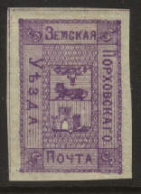
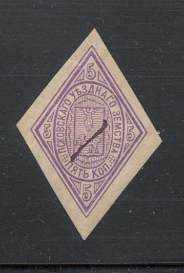

Return To Catalogue - Go to Zemstvos overview - Russia
Note: on my website many of the
pictures can not be seen! They are of course present in the
catalogue;
contact me if you want to purchase it.

5 k violet
5 k blue 5 k red
5 k value overprinted with inverted '5'?


(Images thanks to Bill Claghorn)
5 k black on lilac 5 k black on blue 5 k black on violet 5 k black on green 5 k black on red 5 k black on brown


Forgeries



Note the different sizes of the '5's in the corners in these
stamps
Imperforate 3 k black (1881) 5 k violet Perforated 3 k black (1886)
Very similar stamps were issued for Ostrow.
(Reduced size)

1 k green 10 k red
These stamps seem to exist with forged surcharge '13 k' or '12 k', see: http://www.rossica.org/Samovar/viewthread.php?tid=433 for more details.
(reduced size)


1 k blue, green, black and brown 1 k black, brown, green and yellow (exists imperforate) 3 k blue, green, black and brown 3 k blue, red, black and brown (exists imperforate) 5 k blue, black and brown 10 k blue, violet, black and brown 40 k blue, red, black and brown Surcharged 3 k on 1 k (1895) 3 k on 5 k (1895) '3' on 10 k (1895) '5' on 40 k (1895)
(Reduced size)
1 k black, brown and yellow 3 k black, brown and green 5 k blue and brown 10 k red and brown 40 k lilac and brown Surcharged

'3 k' on 10 k red and brown


1 k lilac and brown 3 k black, brown and yellow
(reduced sizes)
1 k black, brown, green, blue, yellow and red 3 k black, brown, green, blue, yellow and red 5 k black, brown, green, blue, yellow and red 10 k black, brown, green, blue, yellow and red 40 k black, brown, green, blue, yellow and red


1 k orange 3 k green 5 k red 10 k brown 40 k blue


1 k yellow, black, blue, green and red 3 k blue, black, green and red 5 k red, black, blue, green and red 10 k green, black, blue and red
These stamps were printed together, example:
1 k brown 2 k orange 2 k red (1913) 3 k green 5 k blue 5 k blue (1913) 10 k red 10 k blue (1913) 25 k lilac 25 k green (1913) 20 k grey


{kind=link}
{kind=link}
{kind=link}
{kind=link}